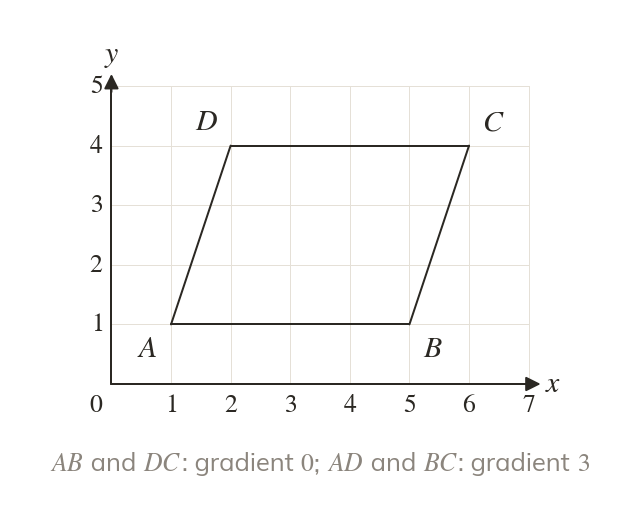
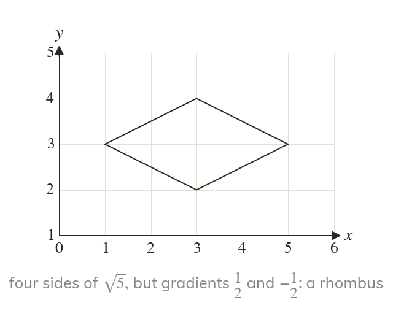
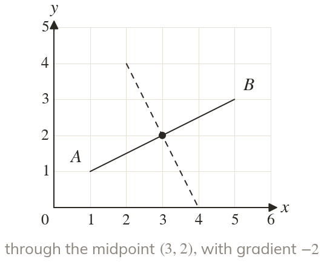
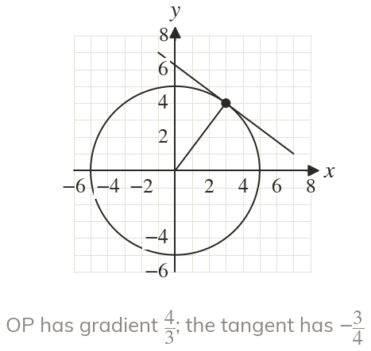

Gradients test the angles
Equal gradients show parallel sides. Gradients that multiply to show a right angle.
Design software checks right angles and equal sides from coordinates alone. Gradients test the angles, lengths test the sides, and a circle adds one more right angle.
Work down the page at your own pace. Write every answer in your book first, then click to check it.
Read each card, then follow the worked examples one step at a time.

Equal gradients show parallel sides. Gradients that multiply to show a right angle.

Equal lengths show equal sides. Gradients alone cannot show it.
Pick an answer. If it's wrong, the feedback tells you which mistake it was.
Read each card, then follow the worked examples one step at a time.

The perpendicular bisector of AB passes through its midpoint. Its gradient is the negative reciprocal of AB's.

The tangent at meets the radius at right angles. So its gradient is the negative reciprocal of OP's.
Pick an answer. If it's wrong, the feedback tells you which mistake it was.
Finished? Next lesson: 10H.13.7 Linear Graphs in Context.
For each skill, tap the one that is true for you today. Your Revise pages start with anything you mark Not yet.
Your ratings are saved on this device only.
Log in, then search for a code to practise that skill.
Videos, worksheets and more on each part of this lesson.